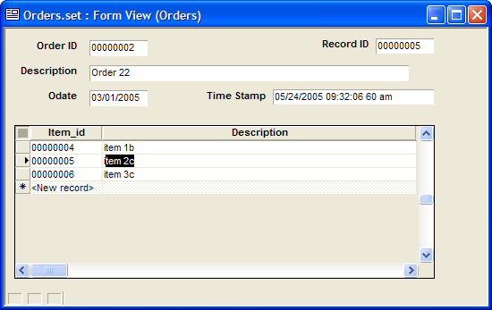

Tracking Changes to Table Fields
This topic describes a general technique for tracking when fields in different tables are modified. The technique uses:
two global variables
a logging table
two functions for writing and reading log entries
field rules for identifying when field values change
event scripts that retrieve update information
The following screen shows the technique implemented for a set with two tables.

The Record_ID field on the form shows the value of the Record_ID global variable, which also happens to be the value of the current record's unique ID field. The TStamp field on the form shows the value of the TStamp global variable, which is the last updated date and time value for the current field.
The Logging Table
The fieldlog logging table has the following structure.
|
Field Name |
Type |
Width |
Description |
|
Fieldname |
C |
50 |
A combination of the table and field name. For example: Order->Description. |
|
Stamp |
C |
25 |
Large enough to contain the expression "" + now(). |
|
Rec_ID |
C |
8 |
Large enough to hold the unique ID associated with each record. Presumably, all tables' IDs are the same length. |
Global Variables
The following variables are defined in the autoexec script. The Record_ID variable contains the unique ID associated with the currently selected record. The TStamp variable contains the last updated date time value associated with the current field.
|
dim global Record_ID as C dim global TStamp as C |
Field Rules
Attach the following script to the CanWriteField event of each field that you want to log. The following example is associated with the Description field of the Order table.
|
if (A_FIELD_VALUE <> Order->Description) then loggit("Order->Description") end if |
Logging Functions
The loggit() function adds and updates records in the fieldlog logging table.
|
FUNCTION loggit as V ( fld as C ) dim t as P dim q as P dim c as N t = table.open("fieldlog") query.filter = "Fieldname = " + s_quote(fld) + " .and. Rec_ID = " + s_quote(var->Record_ID) q = t.query_create() c = q.records_get() if ( c = 0 ) then t.enter_begin() t.Fieldname = fld t.Stamp = "" + now() t.Rec_ID = var->Record_ID t.enter_end(.t.) else t.fetch_first() t.change_begin() t.Stamp = "" + now() t.Rec_ID = var->Record_ID t.change_end(.t.) end if query.filter = .T. q.close() t.close() END FUNCTION |
The readlog() function retrieves the last updated value for the currently selected field.
|
FUNCTION readlog as V (fld as C ) dim t as P dim q as P on error goto norec t = table.open("fieldlog") query.filter = "Fieldname = " + s_quote(fld) + " .and. Rec_ID = " + s_quote(var->Record_ID) q = t.query_create() t.fetch_first() var->TStamp = t.stamp query.filter = .T. q.close() t.close() end norec: resume next END FUNCTION |
Form Field Event Scripts
Each form field that is logged has a script similar to the following that is under its OnArrive event. This example is for the Description field of the Order table. The Order_ID field is the unique ID field for the parent Order table.
|
var->Record_ID = Order->Order_ID record_id.refresh() readlog("Order->Description") tstamp.refresh() |
Embedded Browse Event Script
Each embedded browse has a script similar to the following that is under its OnRowChange event. This example is for the Description field of the Item table. The Item_ID field is the unique ID field for the child Item table.
|
var->Record_ID = Item->Item_ID record_id.refresh() readlog("Item->Description") tstamp.refresh() |